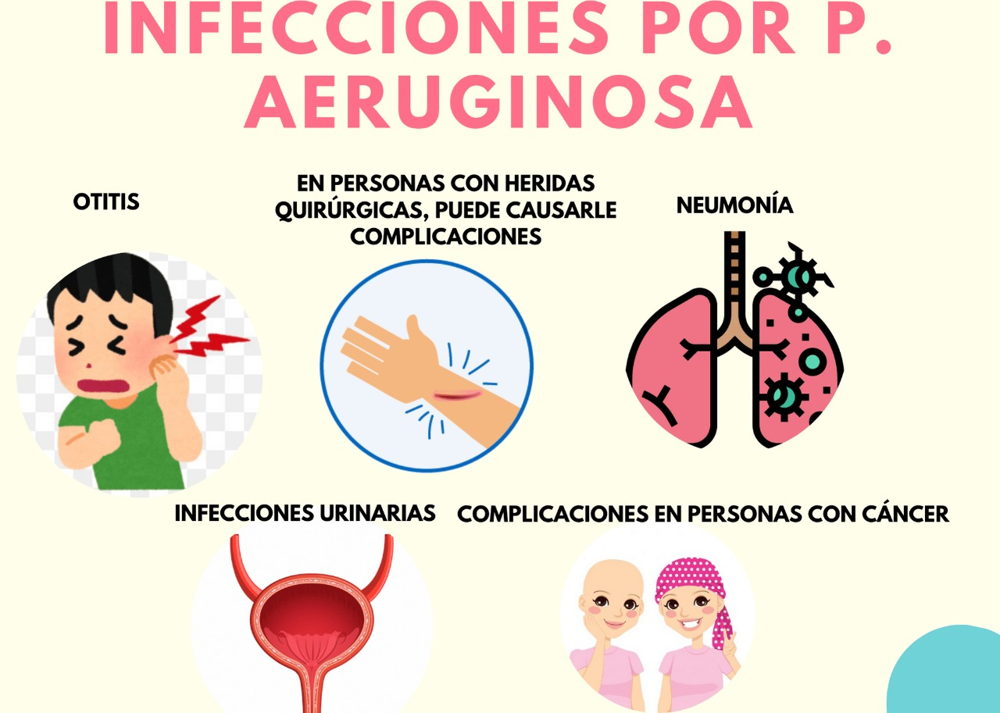
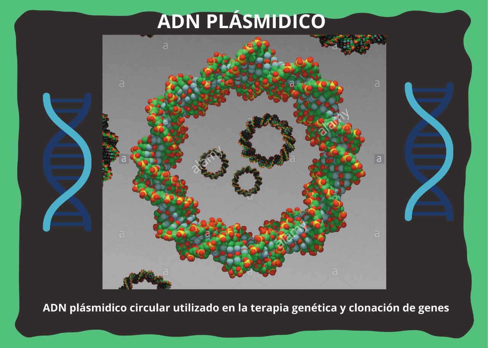
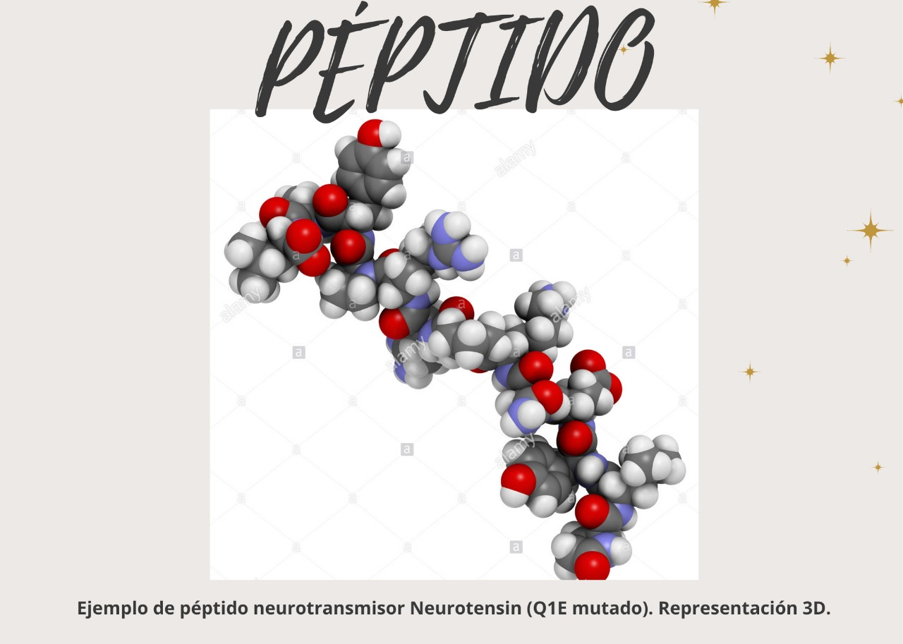

Pseudomonas Aeruginosa El péptido que la combate
En un trabajo en conjunto, se diseñó un plásmido para combatir la p.aeruginosa, para entender este maravilloso mundo, acompáñanos a entender cada concepto:
Pseudomona aeruginosa, la bacteria peligrosa
¿Qué son?
PRESENTACIÓN DEL VIDEO
Usamos una plataforma informática basada en la nube que ayuda a los equipos de investigación y desarrollo a gestionar flujos de trabajo y dato; conocida como Benchling. A continuación se aprecia el proceso desarrollado en este video y en su respectiva descripción, se encuentra el PDF con más detalle:
¿Por qué se ha investigado ésta bacteria?
Resistencia a antibióticos
INFECCIONES QUE CAUSA

PLÁSMIDO 
¿Qué realizan?
Es una pequeña molécula de ADN circular que a menudo se encuentran en bacterias y otras células. Si bien el ADN plasmídico no porta información genética esencial para la vida de la bacteria, sí portan genes que le confieren nuevas propiedades fenotípicas y que en algunos casos le son muy útiles para su adaptación al crecimiento en ciertos ambientes.
PÉPTIDO
DISCUSIÓN DE RESULTADOS
RELACIÓN CON OTRAS ÁREAS DE ESTUDIO
RELACIÓN CON EL ODS: Producción y Consumo Responsable
TEAM
Martínez Meza Paola
Madrazo Gutiérrez Annia Mariana
Morales Govea Nelly Paola
Peniche Cartas Samantha